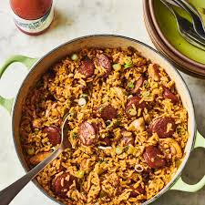

Home
Jambalaya

Description
Jambalaya is a one-pot rice dish originating in Louisiana, combining rice, meat or seafood, and vegetables. It's often associated with Cajun and Creole cuisine, incorporating flavors from French, Spanish, and African culinary traditions. The name "jambalaya" is believed to come from the French word "jambalaia," meaning "mishmash".
Ingredients
- 2 scallions
- 1 samll yellow onion
- 3 medium stalks celery
- 1 medium green bell pepper
- 3 cloves garlic
- 1 package andouille sausage
- 12 ounces boneless chicken
- salt
- butter
- rice
- 2.5 cups chicken broth
Steps
- Brown sausage then remove
- Cook chicken then remove
- Saute vegetables until tender, then add garlic and salt
- Add chicken broth to vegetables
- Add cooked meats
- Let simmer for some time
- Enjoy!